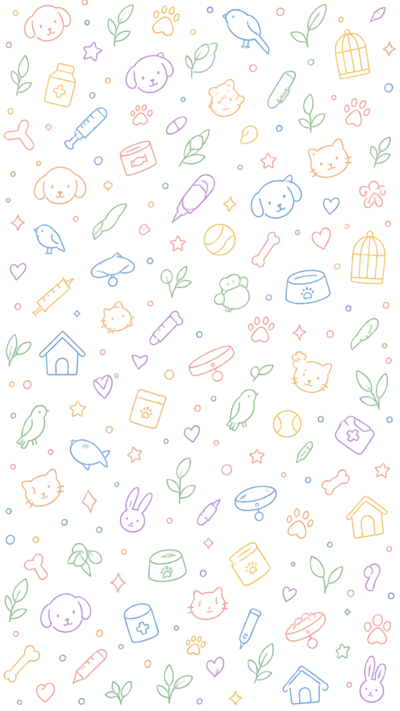

Turkey leftovers? Lid on the bin.
Cooked bones splinter. Never share them, even as a treat.
Roast string, netting and foil smell like dinner and can cause blockages.
Corn cobs are a classic swallow-whole hazard.
Think they ate something? Call your vet straight away.
Busy week? Their meals and walks
stay on schedule with PETTO.